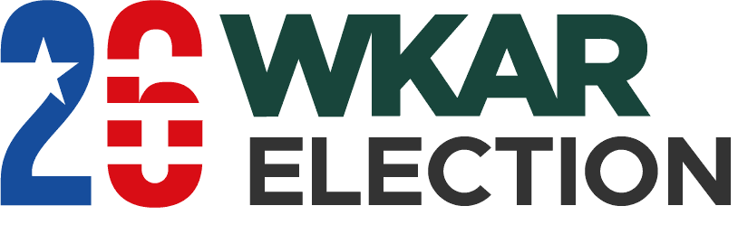
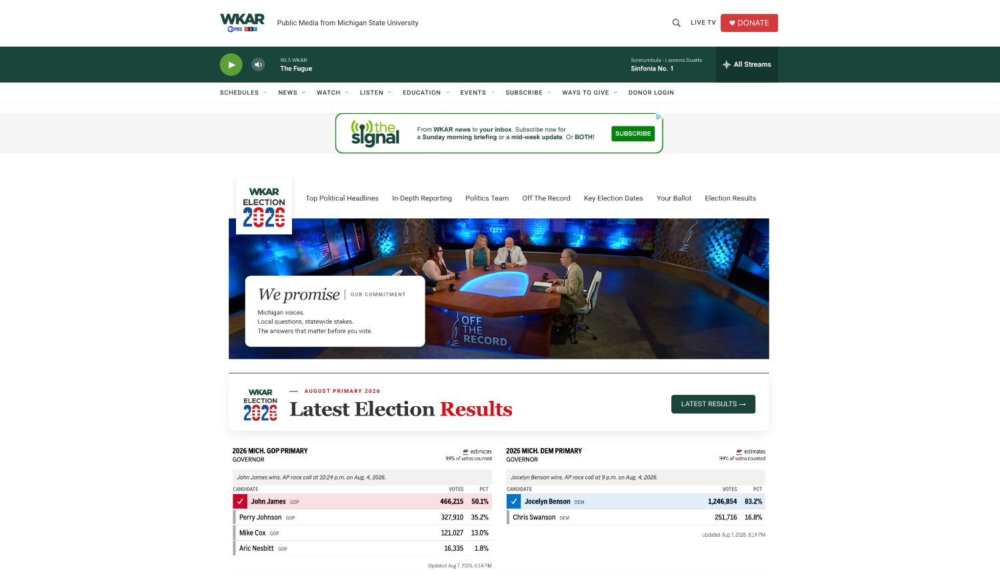
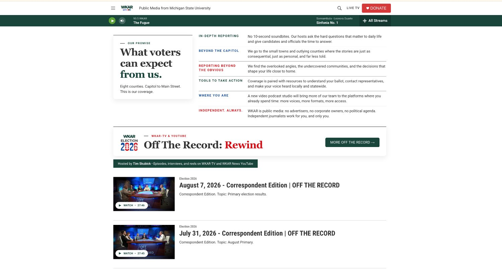
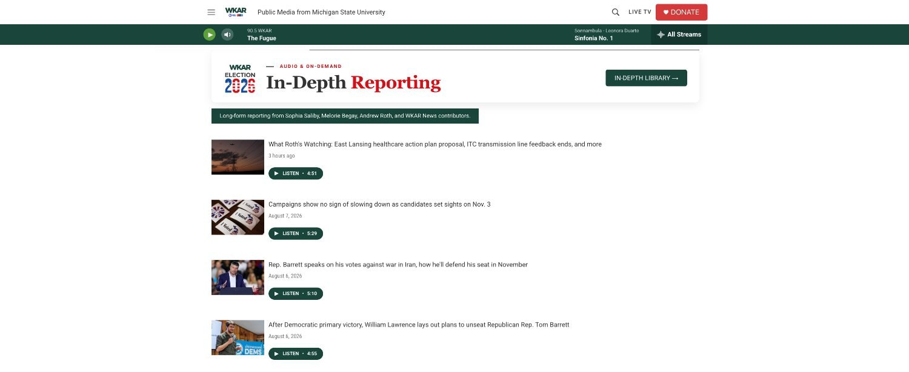
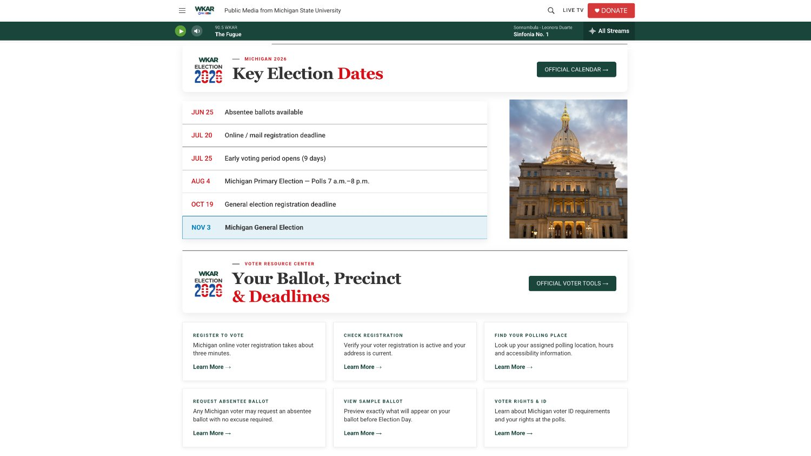

From the WKAR News 2026 strategic plan
A destination, not a tag page.
WKAR did not have a dedicated election destination. Building one was part of the 2026 strategy I wrote. I set the product structure, the sections and the editorial promise, hired a full-time local politics reporter to expand our in-depth coverage going into election season, and handed a clear plan to the launch team for execution.
It launched ahead of Michigan’s August primary and now connects local questions with statewide reporting, election results, voter tools and the state’s longest-running political program.
Visit the live site ↗
The launch team produced the brand system across site, newsletters and on-air. I set the strategy, product structure and editorial promise behind it.

The promise, on the page
Michigan voices. Local questions, statewide stakes.
It is an editorial standard published where the audience can hold us to it, and an example of strategy translated into product.
In-depth reporting
No ten-second soundbites. Hosts ask the hard questions and give candidates time to answer.
Beyond the capitol
The small towns and outlying counties where the stories are just as consequential and far less told.
Tools to take action
Coverage paired with resources to understand a ballot and reach a representative.
Independent. Always.
Coverage guided by public-service standards, not political or commercial pressure.

The build
Four sections, each with a job.

A lead well with bylines and listen times on every item. Audio and digital designed as one audience experience.

An on-demand library of long-form reporting from Saliby, Begay, Roth and WKAR News contributors.

Registration deadlines, early voting, sample ballots, polling places, voter ID. Service journalism as a first-class section.
Talent as the front door
Six journalists, named and pictured, before a single headline.
The politics team is the front door, not a staff page buried three clicks down. Hiring a full-time local politics reporter to expand our in-depth election coverage was part of the plan, not an afterthought to it.

Brand into channel
One identity, three channels, and a plan for how they feed each other.
The Election 2026 banner and politics-team strip appear inside The Signal and The Signal+ every week, driving readers from inbox to site. Behind it, the 2026 Politics Plan and the Election 2026 promotion plan set the editorial cadence, audience paths and responsibilities before launch.

Strategy is only real once it has a shape someone can use.